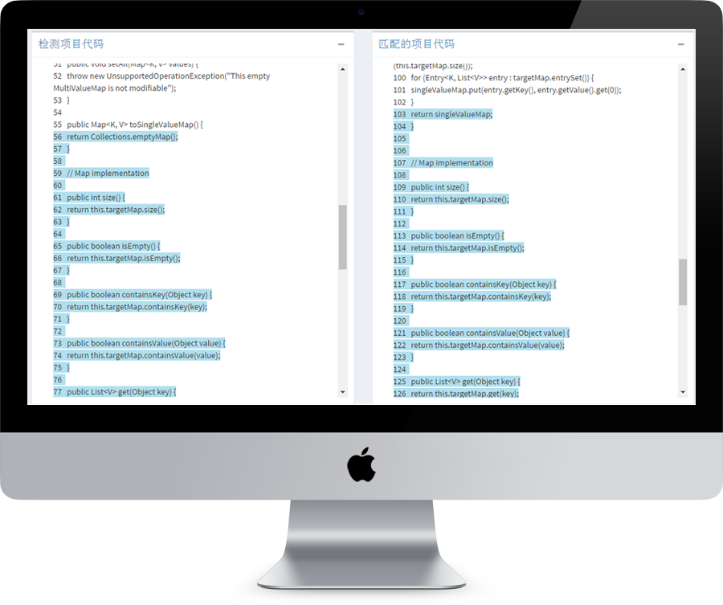
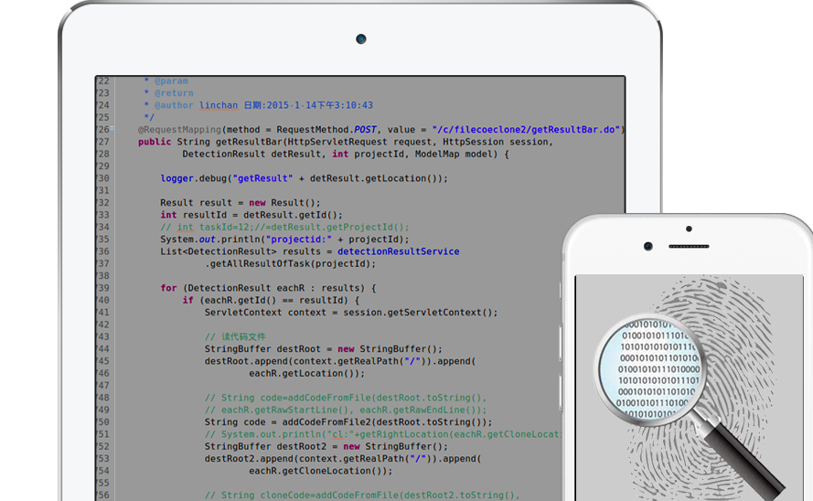

棱镜七彩是国内首支具备自主研发能力并专注于软件源代码安全评估与管理的创业团队，推出了PrismGuard软件源代码安全评估平台。该系统基于Devops内生安全主动防御理念，通过对软件代码的各种安全性和开源许可证的合规性等方面进行检测、跟踪及管理，保障用户在研发、交付、运行等环节的信息安全和知识产权安全，为用户提供安全检测、智能运维、安全防护三位一体的供应链安全管理和防护。
系统特色
自主研发大数据检测分析引擎
PrismGuard软件源代码安全评估平台采用大数据技术、并行计算技术和自主高效的检测算法，对软件源代码中开源组件和克隆文件情况进行分析，并进一步分析和跟踪组件漏洞、组件质量和许可证合规性。
- 自主研发的高效检测算法
- 专门优化的大数据与并行计算技术
- 组件质量评价和漏洞跟踪技术

体量最大的开源项目（组件）库
平台建立国内最大的开源项目（组件）数据库，覆盖200万以上的开源项目（开源组件），源代码容量超过100TB。同时，系统还收集了开源组件漏洞、恶意代码、加密算法、敏感行为等适用于软件供应链安全的各类安全风险特征，总计达数万个。另外，系统支持数十种常用开源许可证的兼容性分析。
- 国内最大的开源项目（组件）库
- 覆盖广泛的安全风险特征库
- 支持广泛的开源许可证兼容性分析

基于Devops内生安全的安全管理平台
平台基于Devops内生安全主动防御理念，可与用户研发环境和运行环境深度融合，全面覆盖研发、交付、运行等环节的信息安全和知识产权安全，实现软件供应链安全的全面覆盖。
- Devops内生安全主动防御
- 研发环境与运行环境的深度融合
- 软件供应链安全全覆盖